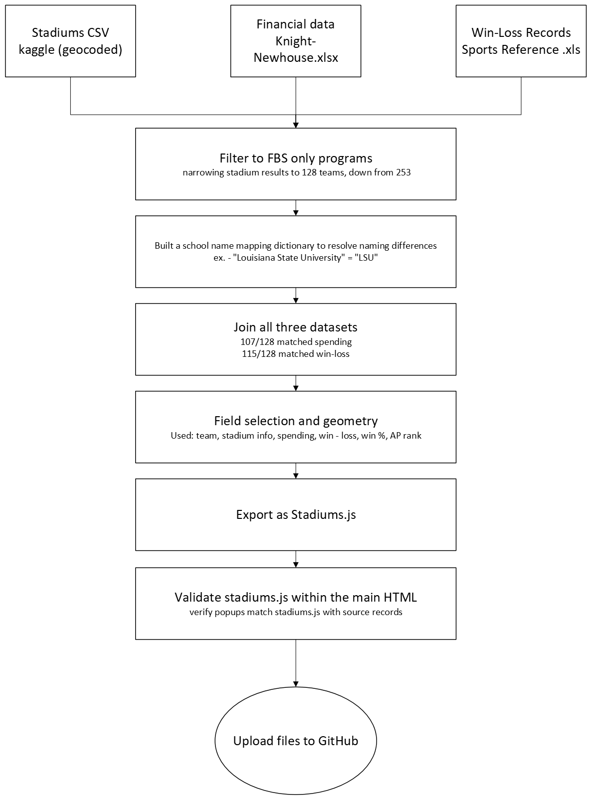

Project background, data sources, and methodology.
This interactive web map visualizes all 128 Division I FBS college football programs across the United States, exploring whether increased financial investment in football programs correlates with better on-field performance. Using data from the 2022, 2023, and 2024 seasons, users can compare program spending, win-loss records, and AP Poll rankings at each stadium location across the country. The intended audience includes sports fans, students, and anyone curious about the financial side of college athletics who wants to explore regional patterns and outliers beyond what static rankings and data tables can show.
The financial landscape of college athletics has shifted dramatically following the introduction of Name, Image, and Likeness (NIL) policies, driving programs to invest more to stay competitive in recruiting and performance. Unlike existing sources like the Knight-Newhouse database or Sports Reference, this map integrates spending, performance, and location into a single interactive geographic interface — letting users see at a glance whether the biggest spenders are also the biggest winners.
| Dataset | Source | Date | What it represents |
|---|---|---|---|
| NCAA Stadium Locations | Kaggle | Static | Stadium name, geocoded coordinates, capacity, year built, conference |
| College Athletics Financial Data | Knight-Newhouse Database | 2022–2024 | Total football program spending per school per year |
| CFB Win-Loss Records + AP Rankings | Sports Reference | 2022–2024 | Season wins, losses, win percentage, and end-of-season AP Poll ranking |
| Basemap Tiles | Esri, CartoDB | Current | Background reference imagery and street map tiles |
The diagram below outlines the full pipeline from raw source files to web delivery.

Created by Bryant Yanke for GEO 455: Web Mapping, University of Wisconsin–La Crosse.
Tools used: Leaflet.js, Bootstrap 5, Python (pandas), Phoenix Code, GitHub Pages, Claude AI (Anthropic) for data processing and JavaScript development assistance.
Basemap tiles © Esri, © CARTO, © OpenStreetMap contributors.
← Back to Map